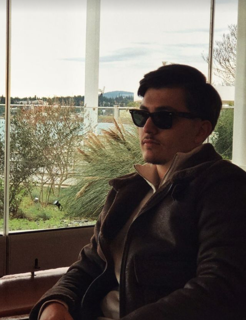

Филип Антовски, роден на 28.11.2004 во Скопје, Македонија, е студент на додипломски студии во прва година на Факултетот за Информатички Науки и Компјутерско Инженерство при универзитетот „Св. Кирил и Методиј“. Има завршено средно правно образование во СЕПУГС "Васил Антевски Дрен". Искусен графички дизајнер со страст за креативност и иновативност. Кога не дизајнира неверојатни визуелни слики, можете да го најдете како тренира кикбокс или ја истражува природата, планинари вози велосипед и прави други активности на отворено. Со остро око за детали и љубов за поместување на границите на повисоко ниво, Филип носи уникатна перспектива на секој проект со кој се занимава.
